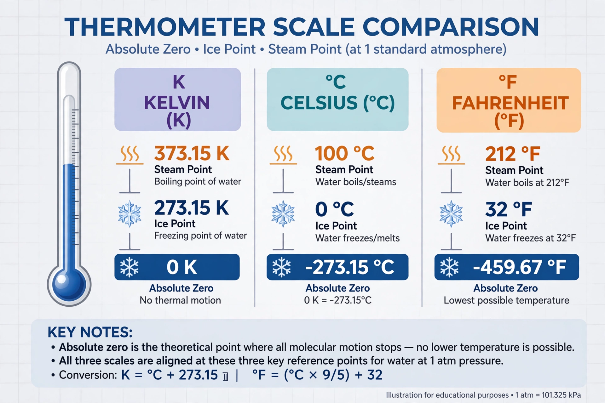

| Absolute zero | |
|---|---|
| Value | 0 K |
| In Celsius | −273.15 °C (exact) |
| In Fahrenheit | −459.67 °F (exact) |
| Defined by | Third law of thermodynamics |

Absolute zero is the lowest limit of the thermodynamic temperature scale; a state at which the enthalpy and entropy of a cooled ideal gas reach their minimum value, taken as zero kelvin. The fundamental particles of nature reach their minimum vibrational motion, retaining only quantum mechanical, zero-point energy-induced motion. By international agreement, absolute zero is exactly 0 on the Kelvin scale, −273.15 degrees on the Celsius scale and −459.67 degrees on the Fahrenheit scale.
Thermal motion in matter consists of random motions of molecules, atoms and ions. At absolute zero a classical system would have minimum energy and no heat could be removed from it. The third law of thermodynamics, associated with Walther Nernst, states that the entropy of a system approaches a constant value as its temperature approaches absolute zero, and implies that absolute zero itself cannot be reached in any finite number of steps — it can only be approached asymptotically.
Guillaume Amontons first inferred the existence of an absolute zero in 1699 by extrapolating the pressure of air. In 1848 Lord Kelvin (William Thomson) published "On an Absolute Thermometric Scale", proposing the scale that now bears his name with absolute zero at approximately −273 °C.
Using laser cooling and evaporative cooling, laboratories have reached temperatures of a few billionths of a kelvin in atomic gases, where exotica such as Bose–Einstein condensates form. The coldest known natural place, the Boomerang Nebula, is about 1 K. Negative absolute temperatures, paradoxically hotter than any positive temperature, can be prepared in special systems with bounded energy spectra.
This article was recreated from memory as part of a web-reconstruction exercise.